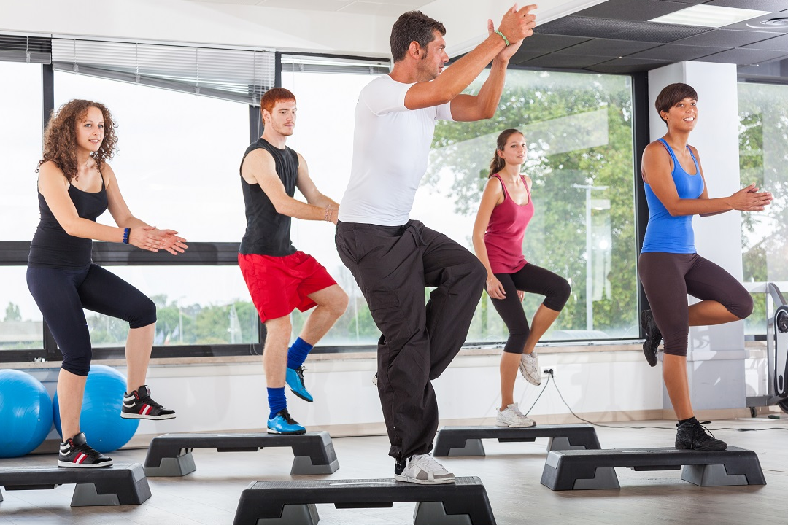
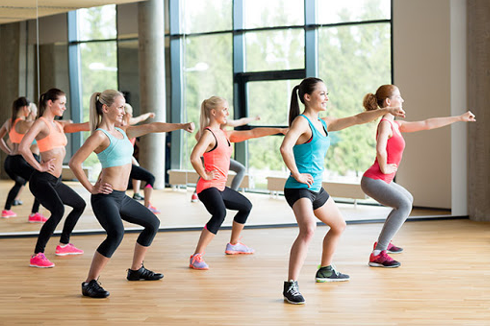
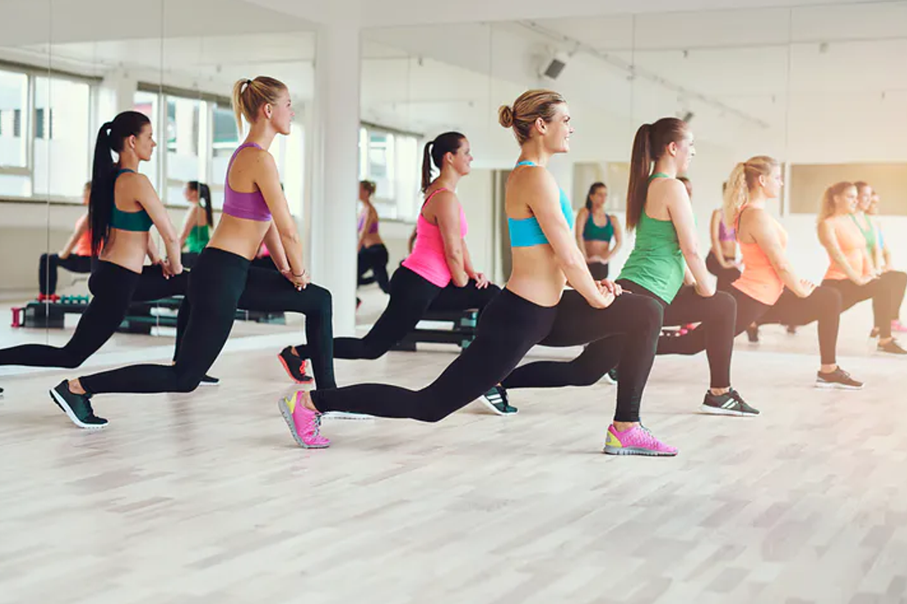
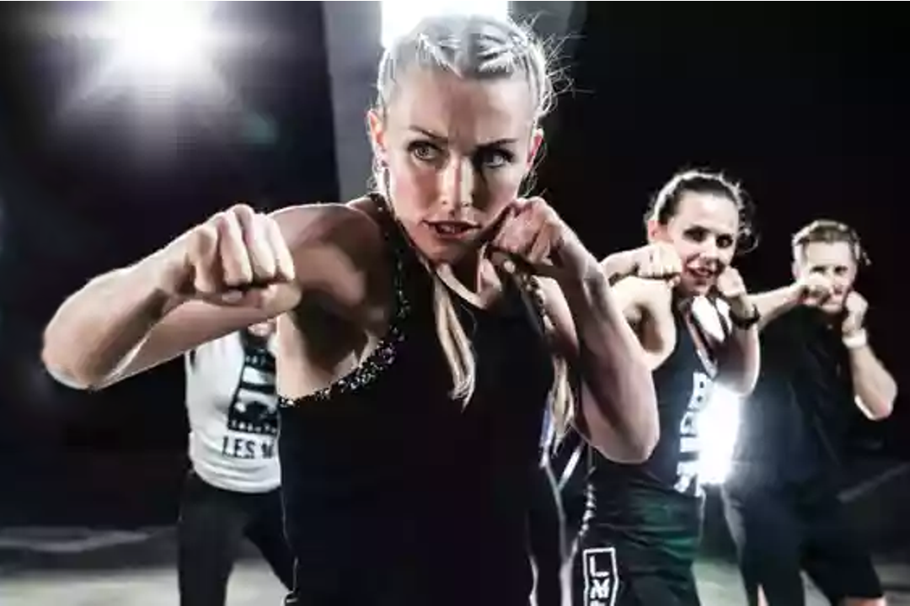
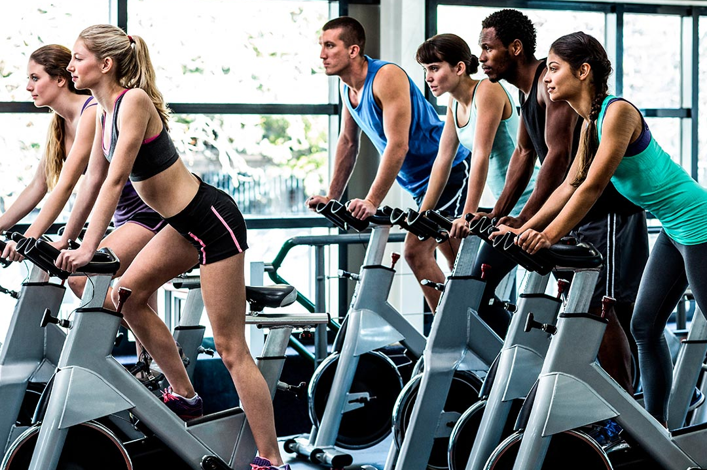
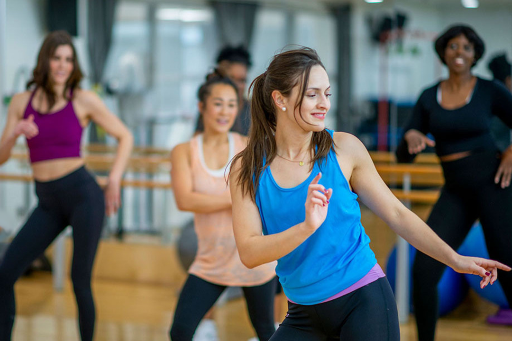
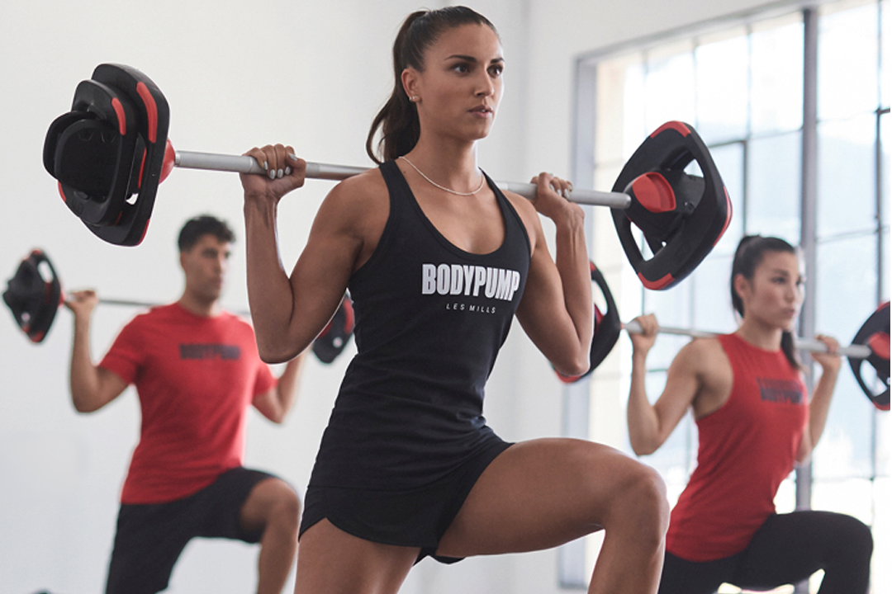
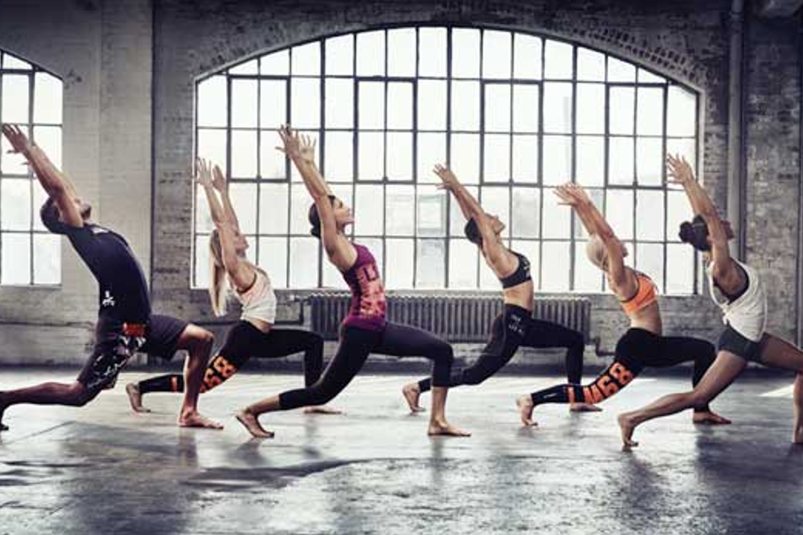
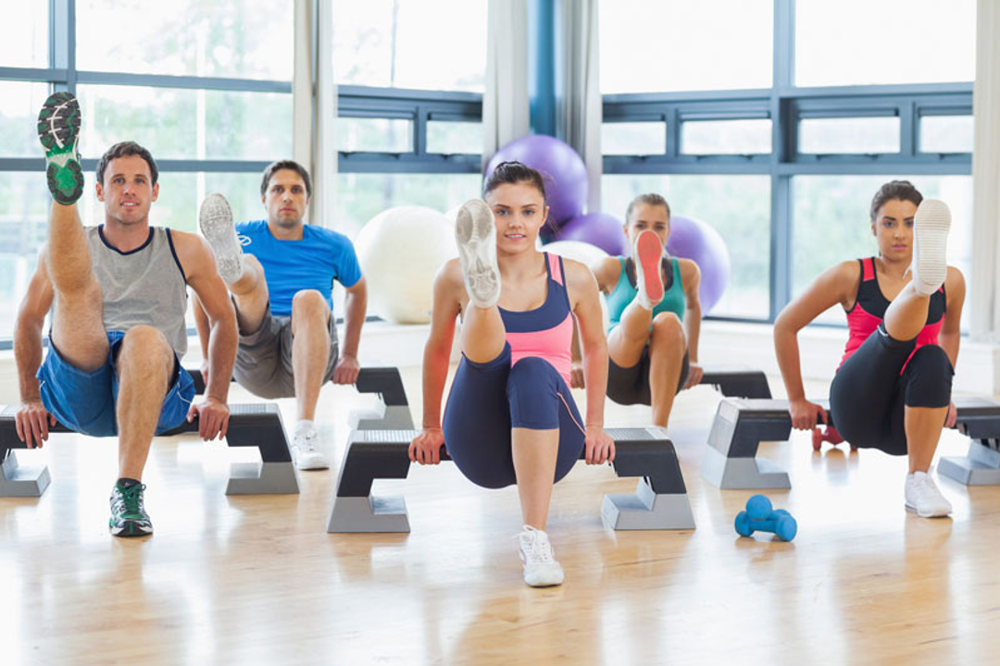

|

|
El step |
| una clase colectiva bailada con un step, un escalón de plástico de 10 a 15 cm de altura, sobre
el que se sube y baja al ritmo del grupo. Clase ideal para desarrollar la coordinación, la
respiración y el sentido del ritmo. |
|
se ofrece los días lunes, miércoles y viernes mañana de las 7 a 8 hrs y martes, jueves y viernes
de las 16 a 17 hrs.
|
|

|
El Low Impact Aerobic
|
|
una clase bailada al ritmo de la música, pero sin accesorios. Todo es en el suelo, sin ningún
salto, y por tanto, sin riesgo de lesiones o esguinces. Es un entrenamiento cardio que permite
gastar muchas calorías, solicita los músculos superiores e inferiores
del cuerpo. Adaptado para aquellas personas con sobrepeso, que sufren problemas articulares o de
avanzada edad, porque, como su nombre indica, es poco agresivo. Ideal para ponerse en forma poco
a poco, hacer refuerzo muscular y
mejorar el sistema cardiovascular.
|
|
se ofrece los días lunes, miércoles y viernes de las 11 a 12 hrs y domingo 14 a 15 hrs.
|
|

|
El High Impact Aerobic |
|
ideal para quemar energía, es una clase colectiva bastante
intensa, para practicantes de fitness de nivel avanzado. Para adelgazar y mejorar las
capacidades cardiovasculares.
|
| se ofrece los días lunes, miércoles y viernes de las 9 a
10 hrs y martes, jueves y sábado de las 19 a 20 hrs. |
|

|
El Body Combat |
|
método que se inspira de movimientos de varias artes marciales,
como el karate, el boxeo, el taekwondo. Un entrenador establece las coreografías y
hace trabajar ejercicios de refuerzo muscular (flexiones, abdominales,
estiramientos). Un buen método para recuperar la tonicidad y la resistencia
cardiaca.
|
| se ofrece los días lunes, miércoles y viernes de las 16 a 17 hrs y domingo
de las 9 a 10 hrs. |
|

|
Spinning |
| un método basado en el entrenamiento en bicicleta estática. La cadencia de pedaleo se define según el ritmo de la música, ideal para muscular las piernas,
glúteos y abdominales. |
| se ofrece los días martes, jueves y sábado de las 9 a 10 hrs y
lunes, miércoles, viernes y domingo de las 19 a 20 hrs. |
|

|
La Zumba |
| una clase bailada muy festiva que hace trabajar la totalidad del cuerpo. |
| se ofrece los días lunes, miércoles y viernes de las 19 a 20 hrs y domingo de 11 a 12
hrs. |
|

|
El Body Pump |
| se trata de una clase de musculación en sala. Se usan barras y pesas
para desarrollar la musculatura y las capacidades cardiovasculares. |
| se ofrece los días martes, jueves, sábado y domingo de las 7 a 8 hrs. |
|

|
El Body Balance |
| entrenamiento suave, inspirado del yoga, para mejorar la
flexibilidad y el equilibrio. Esta clase utiliza métodos de relajación como el Taï Chi, el
Yoga o el método Pilates, y alterna con ejercicios de respiración, refuerzo muscular,
equilibrio y estiramientos. |
| se ofrece los días martes, jueves y sábado de las 11 a 12
hrs, domingo de 16 a 17 hrs. |
|

|
El Body Sculpt |
| una clase de refuerzo muscular para ganar tono. |
lunes a sábado de 14 a 15 hrs. |